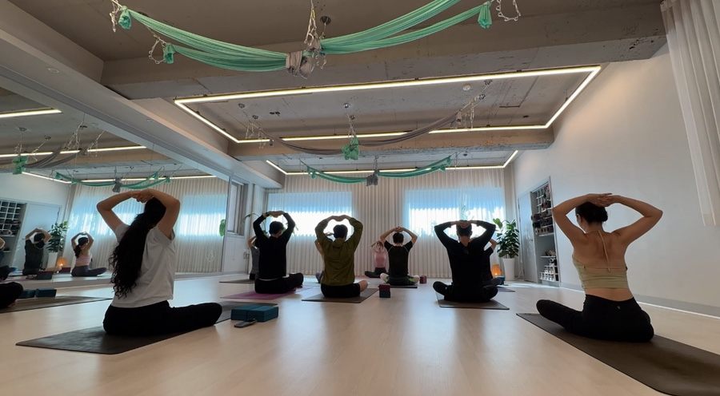
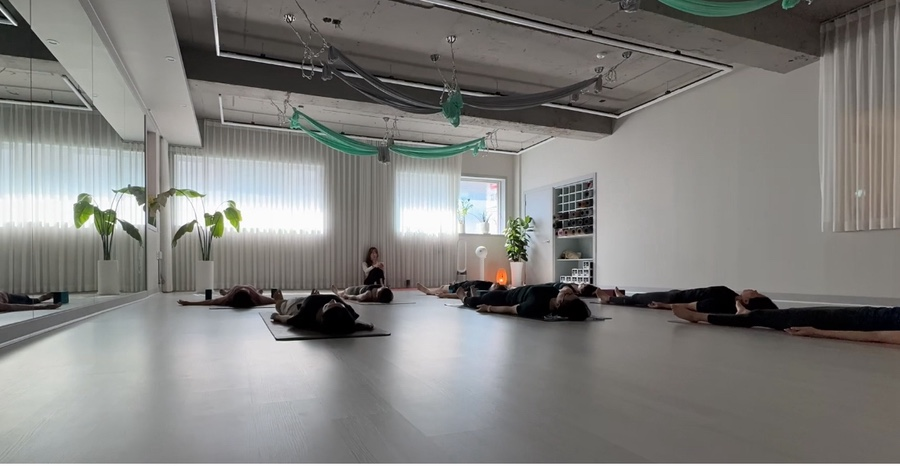

요가 수업에 음악이 흐르고,
그 리듬에 맞춰 몸이 자연스럽게 움직이기 시작해요.
인사이드플로우는 독일에서 시작된 빈야사 기반 요가로
음악에 맞춰 물흐르듯 천천히 움직여
마치 춤을 추는 것처럼 수련하는 요가예요.
대전에서 인사이드플로우를 전문으로 하는 사라요가는
서대전네거리역 4번출구에서 도보 2분 거리,
6명 정원 소그룹, 원장 직강 100%로 운영합니다.

일반 빈야사와 인사이드플로우, 뭐가 다른가요?
| 일반 빈야사 | 인사이드플로우 | |
|---|---|---|
| 음악 | 배경음 수준 | 음악이 시퀀스의 핵심 |
| 흐름 | 동작 중심 연결 | 음악+호흡+동작 일체 |
| 분위기 | 강도 높은 운동 느낌 | 춤추는 명상 느낌 |
| 난이도 | 체력 중심 | 플로우 감각 중심 |
빈야사가 '운동한 느낌'이라면
인사이드플로우는 '움직이는 명상'에 가까워요.
한 곡이 끝나면 어느새 몸과 마음이 함께 풀려 있는
그런 경험이에요.
요가 처음인데 인사이드플로우부터 해도 되나요?
물론이에요!
기본 자세를 모르더라도
발끝부터 손끝까지 힘을 쓰는 방법을
차근차근 안내해드린답니다.
다만 빈야사 기본 흐름(태양경배)에 익숙해지면
인사이드플로우가 더 깊어져요.
사라요가에서는 빈야사 → 인사이드플로우
자연스러운 단계를 추천드려요.

수업은 어떤 분위기인가요?
조명을 약간 낮추고
스피커에서 음악이 흘러나와요.
처음에는 호흡부터 맞추고
음악의 흐름에 맞춰 하나씩 동작이 이어져요.
빠른 곡에서는 역동적으로,
느린 곡에서는 깊이 이완하면서.
누우실 때 너무 행복해하시더라구요^^
꿀같은 사바아사나 시간이
인사이드플로우의 하이라이트랍니다.
요가 수업에서 음악에 맞춰 움직여본 적 있으세요?
한번 경험하면 다른 요가가 좀 심심해질 수도 있어요 :)

사라요가 인사이드플로우는 뭐가 특별한가요?
사라요가 원장은
인사이드플로우 정식 교육과
인사이드 얼라인먼트 전문 과정을 수료했어요.
대전에서 이 두 가지를 모두 갖춘 곳은
사라요가가 유일하답니다.
나에게 집중하는 한 시간,
삶에 여유를 더하는 시간.
꼭 경험해보시길 바라요~
첫 체험수업은 무료예요 💛